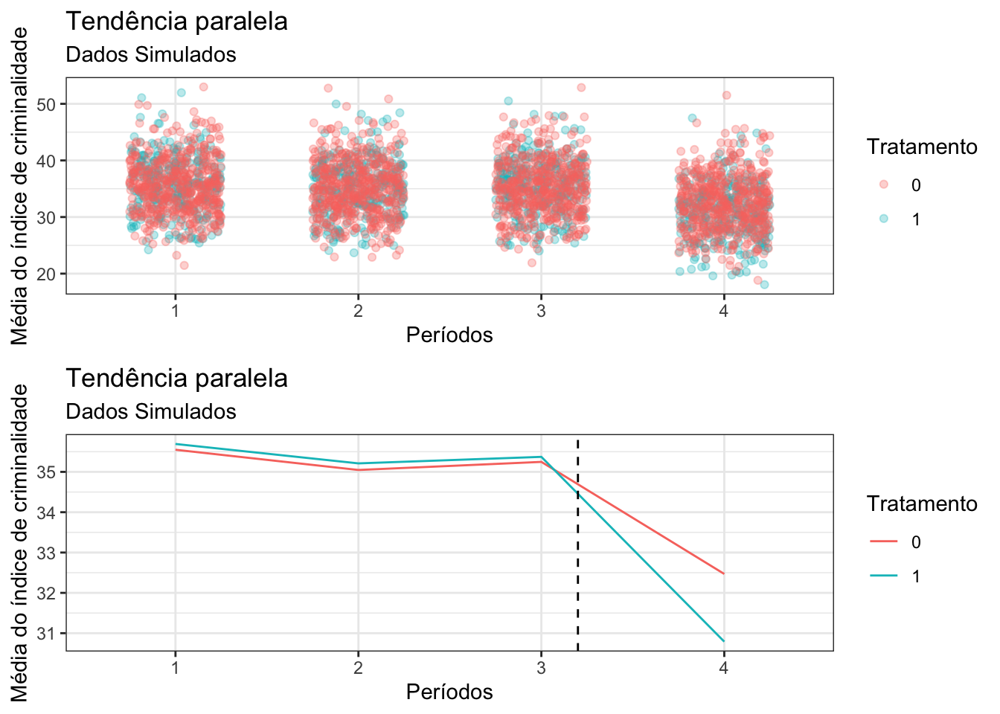
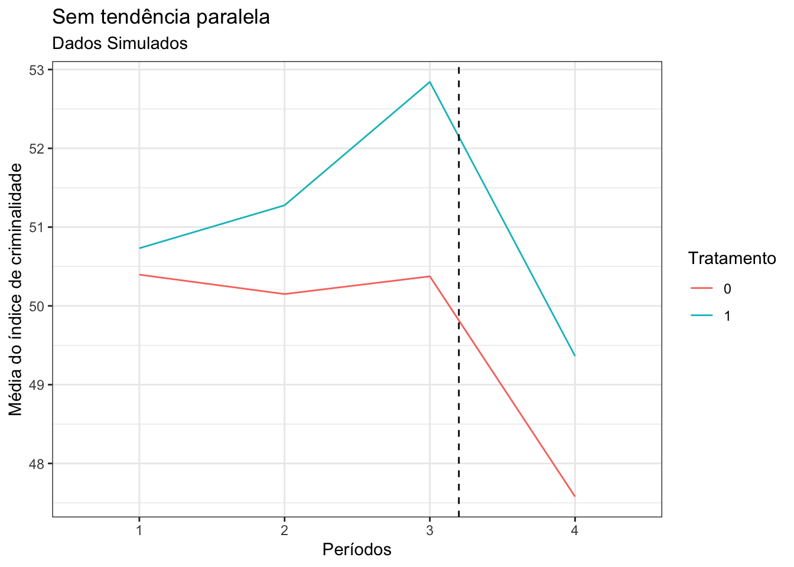

# Carregando os pacotes (instale antes com install.packages(), se necessário)
library(tidyverse)
library(gridExtra)
library(sjPlot)Aula 6 — Diferenças em Diferenças
💻 Script: tabela 2×2 de DiD com os dados de Card & Krueger
1 Introdução
Nessa aula, vamos trabalhar com o modelo de Diferenças em Diferenças (Diff-in-Diff). Vamos trabalhar com um caso fictício. Temos 800 cidades em que queremos ver o impacto de um novo programa de segurança em um índice de criminalidade. Esse programa foi recentemente adotado em 300 das 800 cidades. Assim, elaboraremos um protocolo de avaliação utilizando o método de diff-in-diff.
Primeiramente, vamos examinar uma situação modelo, em que criaremos um banco simulado, em que sabemos os parâmetros que regem o grupo controle (cidades que não implementaram o programa) e o grupo tratamento (cidades que implementaram o programa). Vamos criar uma situação em que o efeito médio do tratamento real é de -2 pontos no índice de criminalidade.
Vamos analisar se os pressupostos para aplicar o Diff-in-Diff são atendidos. O principal pressuposto é o de tendência paralela entre o grupo controle e tratamento. Assim, vamos trabalhar em duas situações, uma em que podemos observar facilmente a tendência paralela, em seguida, uma situação em que uma variável de confusão atrapalha a identificação dessa tendência.
1.1 Com tendência paralela
Simulando o banco de dados - Não se preocupem com essa parte!!! O código está disponível apenas para que quem tenha interesse possa se aprofundar e brincar com os parâmetros.
set.seed(126)
# Number of periods
periods <- 4
# Number of cities
cities <- 800
treated <- c(rep(1,300),rep(0,500))
Cities <- rep(seq(1:cities), times = periods)
Treated <- rep(treated, times = periods)
bd <- tibble(Cities, Treated)
bd$Period <- c(rep(1,800),rep(2,800),rep(3,800),rep(4,800))
# Crime rate (efeito base)
crime_base <- rnorm(cities, mean = 30, sd = 5)
crime_base <- rep(crime_base,4)
# Variação anual ciclica
year_effect <- rnorm(periods, mean = 0, sd = 2)
# Adicionando erro aleatório
eps <-rnorm(3200, mean = 5, sd = 1)
# Efeito do tratamento
treatment_effect <- rnorm(800, -2,.5)
# Combine effects
bd <- bd |>
mutate(crime_rate = ifelse(Period == 1, crime_base + year_effect[1] + eps,
ifelse(Period == 2, crime_base + year_effect[2] + eps,
ifelse(Period == 3, crime_base + year_effect[3] + eps,
ifelse(Period == 4 , crime_base + year_effect[4] + treatment_effect * Treated + eps,NA))))) |>
mutate(Period = as.factor(Period),
Cities = as.factor(Cities),
Treated = as.factor(Treated))
# Apresentando os dados
tab_df(head(bd)) | Cities | Treated | Period | crime_rate |
|---|---|---|---|
| 1 | 1 | 1 | 38.64 |
| 2 | 1 | 1 | 36.67 |
| 3 | 1 | 1 | 32.15 |
| 4 | 1 | 1 | 40.42 |
| 5 | 1 | 1 | 32.73 |
| 6 | 1 | 1 | 35.75 |
Vamos agora visualizar a tendência paralela. Plotaremos um gráfico com a média de grupo controle e grupo tratamento ao longo dos períodos:
Graph <- bd |>
group_by(Period, Treated) |>
summarise(media = mean(crime_rate)) |>
ggplot(aes(x = Period, y = media, color = Treated, group = Treated))+
geom_line() +
geom_vline(xintercept = 3.2, linetype = 'dashed')+
labs(title = "Tendência paralela", subtitle = "Dados Simulados",
y = "Média do índice de criminalidade", x = "Períodos",
color = "Tratamento",group = "Tratamento")+
theme_bw()
Graph1 <- ggplot() +
geom_point(data = bd,
aes(x = Period, y = crime_rate, color = Treated, group = Cities),
alpha = .3,
position = position_jitter(width = 0.25, height = 0, seed = 1234))+
labs(title = "Tendência paralela", subtitle = "Dados Simulados",
y = "Média do índice de criminalidade", x = "Períodos",
color = "Tratamento",group = "Tratamento")+
theme_bw()
grid.arrange(Graph1, Graph,nrow = 2)
Como podemos ver, Na parte de cima do gráfico em que os pontos estão todos plotados há uma confusão. Grupo controle e tratamento parecem aleatoriamente distribuídos. Mas quando fazemos uma estimativa da média, percebemos que há uma tendência paralela entre o grupo controle e o grupo tratamento. Então, é aplicável o uso de Diferenças em Diferenças. Para seguir e simplificar a análise, iremos filtrar o banco de dados para trabalhar em só dois períodos, o 3 e o 4, a fim de aplicar o modelo:
bd_model <- bd |>
dplyr::filter(Period %in% 3:4)Vamos relembrar como é a estrutura de um modelo de diferenças em diferenças:
\[Y = \beta_0 + \beta_1 Tratamento + \beta_2 Tempo + \beta_3(Tratamento \times Tempo) + \epsilon\]
O coeficiente \(\beta_3\), da interação, é o estimador de diferenças em diferenças.
Como implementamos isso no R? Criaremos uma regressão linear com o comando lm(), e inseriremos um termo interativo (termo1*termo2).
fit <- lm(crime_rate ~ Treated*Period, data = bd_model)
tab_model(fit)| crime rate | |||
|---|---|---|---|
| Predictors | Estimates | CI | p |
| (Intercept) | 35.25 | 34.83 – 35.67 | <0.001 |
| Treated [1] | 0.12 | -0.57 – 0.81 | 0.724 |
| Period [4] | -2.78 | -3.38 – -2.18 | <0.001 |
| Treated [1] × Period [4] | -1.80 | -2.78 – -0.83 | <0.001 |
| Observations | 1600 | ||
| R2 / R2 adjusted | 0.125 / 0.124 | ||
Podemos ver pelo resultado apresentado que o efeito médio do tratamento estimado (termo de interação) é de cerca de −1,8, com intervalo de confiança de 95% entre −2,8 e −0,8. O intervalo contém o efeito verdadeiro definido na simulação (−2 pontos no índice).
1.2 Sem Tendência Paralela
E quando não há tendência paralela? Vamos adicionar uma variável de confusão que muda ao longo do tempo de forma diferente entre os grupos. Suponha que a renda local afete o índice de criminalidade (de forma contraintuitiva, mais renda significa mais crime) e que, nas cidades tratadas, a renda esteja crescendo mais rápido do que nas cidades de controle.
Repare que uma variável de confusão só quebra a tendência paralela se a sua evolução for diferente entre tratados e controles. Uma variável que tem a mesma distribuição nos dois grupos e em todos os períodos apenas adiciona ruído.
set.seed(1234)
bd <- bd |>
mutate(Periodo_num = as.numeric(as.character(Period)),
Tratado_num = as.numeric(as.character(Treated)),
# Renda: aleatória, mas cresce 0,8 por período apenas nas cidades tratadas
Confusao = rnorm(n(), mean = 10, sd = 2) + 0.8 * Tratado_num * (Periodo_num - 1),
crime_rate_confuso = crime_rate + 1.5 * Confusao)
Graph <- bd |>
group_by(Period, Treated) |>
summarise(media = mean(crime_rate_confuso)) |>
ggplot(aes(x = Period, y = media, color = Treated, group = Treated))+
geom_line() +
geom_vline(xintercept = 3.2, linetype = 'dashed')+
labs(title = "Sem tendência paralela", subtitle = "Dados Simulados",
y = "Média do índice de criminalidade", x = "Períodos",
color = "Tratamento",group = "Tratamento")+
theme_bw()
Graph
Antes do tratamento (períodos 1 a 3), as linhas já não são paralelas: o crime cresce mais nas cidades tratadas por causa da renda. Vamos estimar o efeito novamente usando o modelo anterior.
bd_model <- bd |>
dplyr::filter(Period %in% 3:4)
fit1 <- lm(crime_rate_confuso ~ Treated*Period, data = bd_model)
tab_model(fit1)| crime rate confuso | |||
|---|---|---|---|
| Predictors | Estimates | CI | p |
| (Intercept) | 50.37 | 49.88 – 50.87 | <0.001 |
| Treated [1] | 2.47 | 1.66 – 3.28 | <0.001 |
| Period [4] | -2.80 | -3.50 – -2.09 | <0.001 |
| Treated [1] × Period [4] | -0.68 | -1.83 – 0.47 | 0.243 |
| Observations | 1600 | ||
| R2 / R2 adjusted | 0.096 / 0.095 | ||
Agora a estimativa fica viesada: a tendência diferencial da renda (0,8 × 1,5 = 1,2 ponto por período) se soma ao efeito do programa, e o termo de interação fica bem mais próximo de zero do que o efeito verdadeiro de −2. Quando adicionamos a renda como controle, voltamos a comparar cidades com a mesma evolução de renda e recuperamos uma estimativa próxima à do modelo com tendência paralela.
fit2 <- lm(crime_rate_confuso ~ Treated*Period + Confusao, data = bd_model)
tab_model(fit2)| crime rate confuso | |||
|---|---|---|---|
| Predictors | Estimates | CI | p |
| (Intercept) | 35.52 | 34.28 – 36.77 | <0.001 |
| Treated [1] | 0.17 | -0.55 – 0.88 | 0.647 |
| Period [4] | -2.78 | -3.38 – -2.18 | <0.001 |
| Confusao | 1.47 | 1.36 – 1.59 | <0.001 |
| Treated [1] × Period [4] | -1.78 | -2.76 – -0.80 | <0.001 |
| Observations | 1600 | ||
| R2 / R2 adjusted | 0.348 / 0.346 | ||
Dessa forma, podemos ajustar por variáveis de confusão que variam no tempo e restabelecer a tendência paralela condicional, desde que consigamos identificar e medir essas variáveis e que elas não sejam afetadas pelo próprio programa (se fossem, controlar por elas eliminaria parte do efeito que queremos medir).